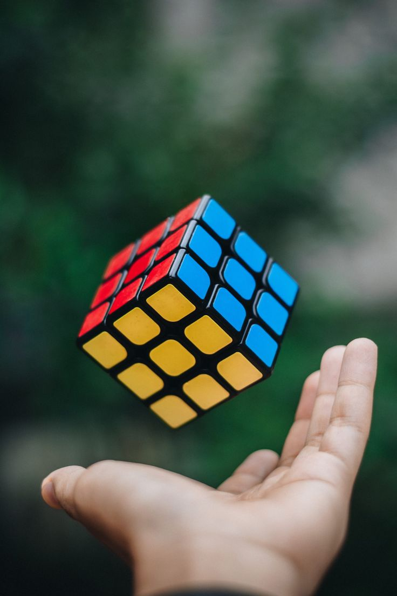
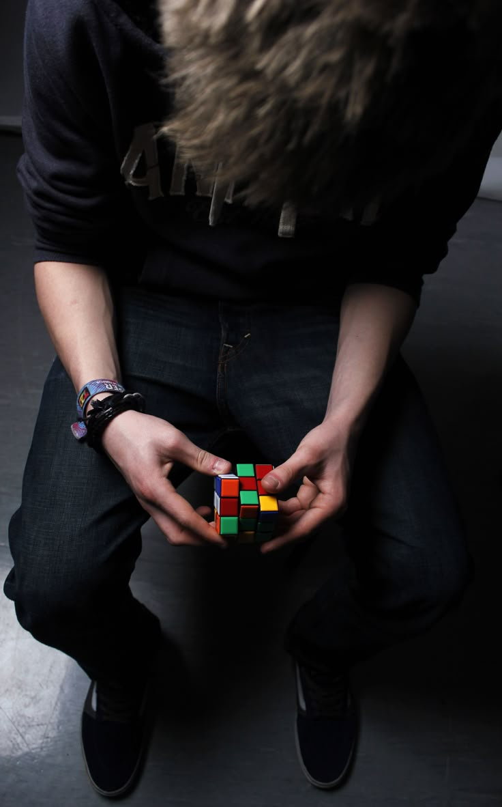
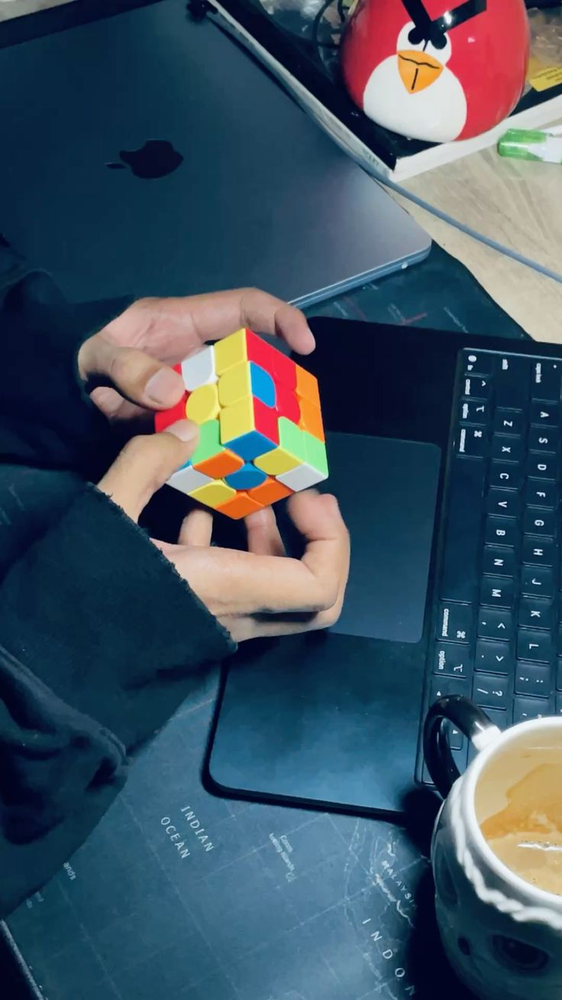
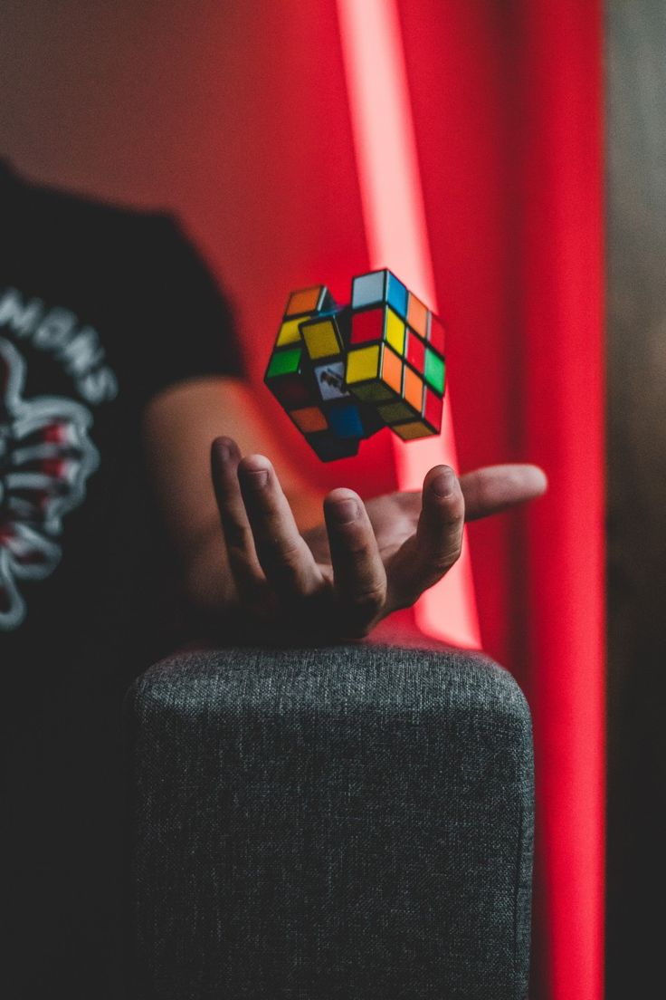

cfop is natural now but roux makes me think.
speedcubing is just muscle memory eventually. your fingers know the algorithms before your brain even registers the colors on the plastic. you see a specific pattern, your hands execute the trigger, and the layer solves itself. it's pure automation. but lately, i've been forcing myself to use the roux method just to break that automation. roux requires intuition. it requires block building, looking ahead in a way that cfop doesn't always demand if you're just spamming algorithms.
i've also been messing with the megaminx lately, and it's a completely different tactile experience. twelve faces instead of six. it feels less like a speed solve and more like an extended journey across a piece of geometry. it's grounding, honestly. twisty puzzles just make sense. there's a defined end state, a clear set of rules, and a deterministic outcome.




unlike a software engineering degree at nile where the end state is just a blur of exams, project deadlines, and general exhaustion. with the cube, you scramble it, you solve it, you put it down. it's a closed loop. i think i need that right now. i need things that can actually be finished in under two minutes so i can remind myself what completion feels like.
the other thing about cubing is the community. not that i'm particularly active in it, but there's something comforting about knowing that somewhere in the world people are sitting at their desks doing timed solves and improving by fractions of a second at a time. the incremental progress is visible. measurable. undeniable.
i've been clocking around sub-20 on cfop consistently now. not competitive by any serious standard, but fast enough to feel like i've actually absorbed the method. the roux thing is slower — i'm around 30 seconds with it — but there are solves where it just flows in a way that feels different. more organic. less mechanical.
i'll probably end up committing to one eventually. today is not that day.
← Back to Blog